구글 말을 다 믿으면 안 되는 이유
발표자는 자신이 팔았던 이전 사업의 Google Ads 계정을 먼저 열어 보여 줘요. 광고비로 약 17만 7천 캐나다달러를 썼고, 그 광고에서 나온 매출을 추적해 보니 73만 달러였다고 해요. 전환율은 20% 안팎이었어요. 이 영상은 그 계정을 만든 전략을 Claude Code로 자동화하는 법을 다뤄요.
슬라이드는 앞으로 다룰 전략 네 가지를 카드로 늘어놓아요. 01 SKAG, 02 ROAS 추적과 대시보드, 03 광고마다 따로 만든 랜딩 페이지, 04 사이트 방문자를 다시 잡는 리타기팅이에요. 이 문서의 나머지 부분이 이 네 장을 차례로 풀어요.
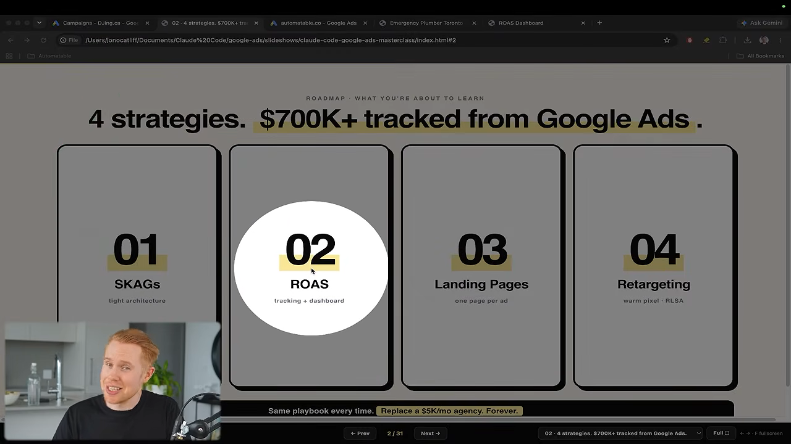
잔고 1만 달러에서 시작한 이야기
발표자는 창업 초기에 무엇을 해도 안 됐다고 해요. 통장에 1만 달러가 남았을 때 Google Ads를 시작했고, 월세가 나가면서 잔고가 계속 줄었어요. 그래프의 빨간 선이 바닥을 찍는 지점이 2천 달러, 약 2주를 버틸 돈이었어요. 거기서 첫 광고로 고객 10명을 얻으면서 초록 선처럼 반등했고, 결국 일곱 자리 매출 사업으로 키워 팔았어요.
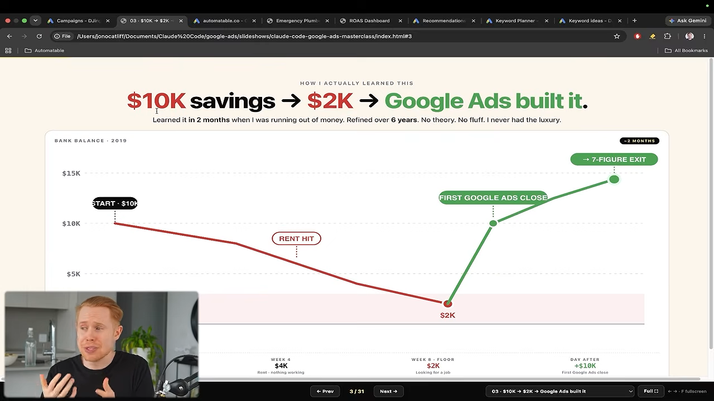
구글이 권하는 것 중 무시할 세 가지
첫째는 추천 탭의 최적화 점수예요. 점수를 올리라는 제안은 대개 광고비를 더 쓰게 하는 쪽이에요. 둘째는 주기적으로 걸려 오는 계정 담당자의 전화예요. 발표자는 담당자의 보너스가 광고주의 성과가 아니라 지출에 묶여 있다고 말해요. 셋째는 클릭 수, 클릭률, 전환율처럼 화려한 지표예요. 이 지표들이 좋아도 이익이 나는지는 알 수 없어요.
아래 슬라이드는 왜 이익을 따로 추적해야 하는지 두 가지 사각지대로 보여 줘요. 왼쪽은 한 달 매출 5만 8,400달러가 SEO(Search Engine Optimization), Google Ads, SNS(Social Networking Service), 외부 중개 사이트 중 어디서 왔는지 모르는 상황이에요. 오른쪽은 구글 화면이 노출, 클릭률, 폼 제출의 1~3단계에서 끝나고, 통화, 상담, 결제의 4~6단계는 보이지 않는다는 뜻이에요. 맨 아래 검은 상자는 진짜 ROAS를 6단계 결제 금액 나누기 광고비로 정의해요.
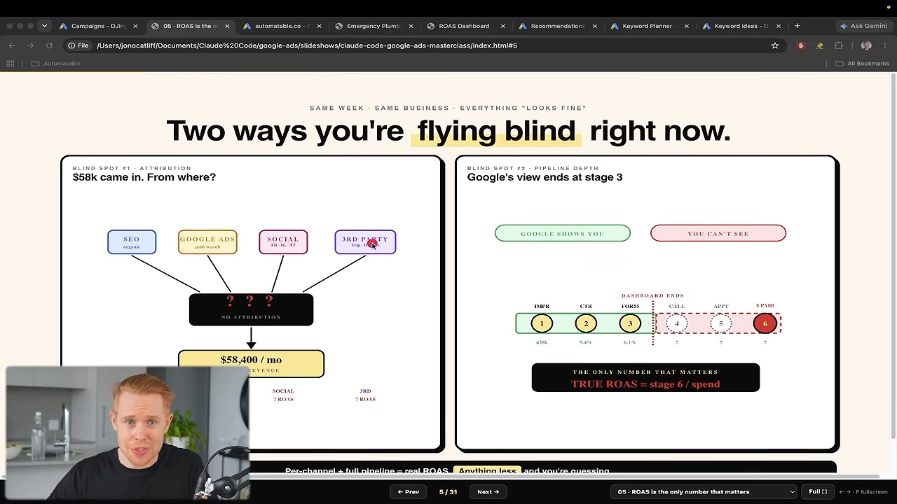
돈 되는 키워드와 SKAG 전략
키워드를 잘못 고르면 이길 수 없어요. 그런데 AI(Artificial Intelligence)에게 "좋은 키워드"를 물으면 그럴듯하지만 검색량이 없는 답을 준다고 발표자는 경고해요. 그래서 키워드는 사람의 의도와 실제 데이터로 골라요.
슬라이드는 "plumber"를 입력했을 때 나오는 자동완성 여섯 개에 각각 의도를 붙여 놨어요. "become a plumber"는 구직, "plumber school near me"는 학생, "plumber equipment"는 장비, "how do plumbers fix a sink"는 직접 고치려는 사람, "cheap plumber"는 가격 비교예요. 맨 아래 노란 줄 "emergency plumber sydney now"만 초록색 'READY TO BUY' 표시가 붙어 있어요.
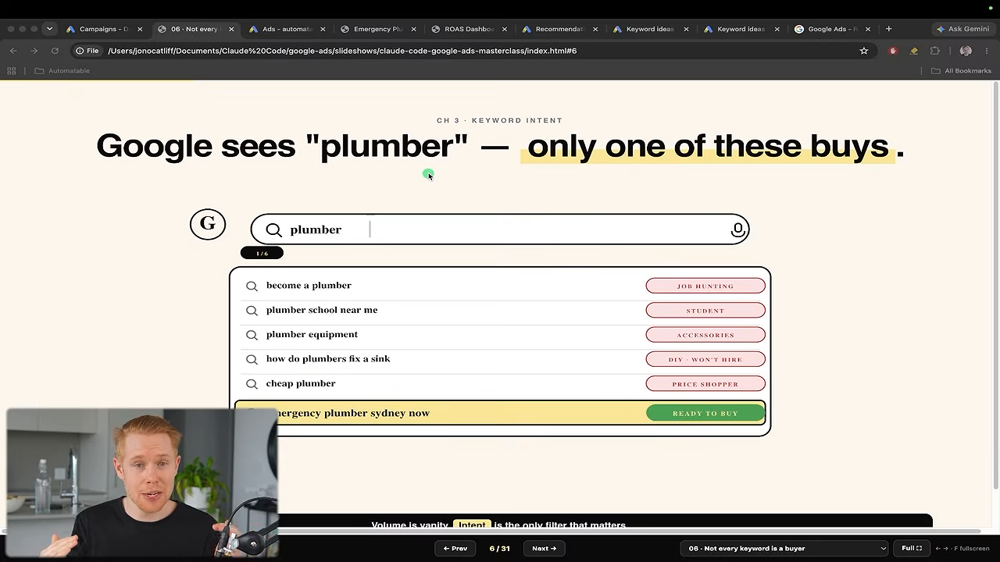
일치 유형은 과녁으로 생각해요
한가운데를 맞히는 키워드는 정확하지만 수가 적어요. 그래서 조금 넓혀 검색량을 늘리는데, 얼마나 넓히느냐가 일치 유형이에요. 슬라이드의 과녁은 바깥 고리부터 확장 검색, 2021년에 없어진 확장 검색 수정자, 구문 일치, 한가운데 일치검색이에요. 오른쪽 카드에는 'emergency plumber toronto'로 광고를 걸었을 때 실제로 걸리는 검색 예시가 적혀 있어요.

| 일치 유형 | 슬라이드의 예시 검색 | 발표자의 판단 |
|---|---|---|
| 확장 검색 (기호 없음) | plumber salary toronto, diy clogged drain, plumbing memes | 예산만 태워요. 피해요 |
| 확장 검색 수정자 (+기호) | 더는 받지 않아요 | 2021년에 없어졌어요 |
| 구문 일치 ("따옴표") | 24/7 emergency plumber toronto downtown, best emergency plumber toronto same day | 기본으로 써요. 같은 뜻의 여러 표현을 잡아요 |
| 일치검색 ([대괄호]) | emergency plumber toronto, emergency plumbers toronto, toronto emergency plumber | 가장 정확하지만 모두가 그 표현으로 찾진 않아요 |
키워드 플래너로 실제 숫자를 봐요
키워드는 무료인 Google 키워드 플래너에서 찾아요. Google Ads 계정을 만들고 도구 메뉴에서 '새 키워드 찾기'를 고른 뒤 "plumbing"처럼 넓게 넣어요. 이때 지역을 실제 영업하는 도시로 바꿔야 해요. 기본값은 나라 전체라서, 캘리포니아에서 일하는데 미국 전체의 클릭 값을 내게 될 수 있어요. 데모는 캐나다 토론토로 좁혀 키워드 699개를 받았어요.
결과 표에서 동그라미 친 열이 월평균 검색수예요. 발표자는 이 숫자를 Claude가 모르는 정보라고 강조해요. 경쟁도가 높은 건 나쁜 신호가 아니에요. 경쟁이 있다는 건 그 키워드에 돈이 된다는 뜻이에요. 맨 오른쪽 열은 다른 광고주가 상단 노출에 내는 입찰가예요.
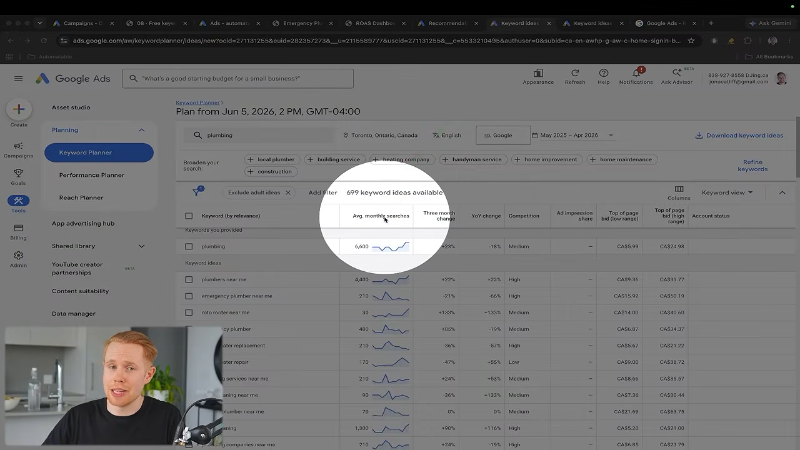
어떤 업종이든 통하는 패턴도 슬라이드로 정리했어요. 왼쪽은 [서비스] 자리에 내 업종만 넣으면 되는 템플릿 12개예요. 'emergency [service]', '[service] near me', '[service] [city]', '24/7 [service]', 'same day [service]'처럼 위쪽 9개가 'HI', 아래쪽이 'MED'예요. 오른쪽은 'plumber sydney'를 플래너에 넣었을 때의 예시 숫자예요.

서비스 × 도시 매트릭스
발표자가 특히 효과를 봤다는 방법이에요. 서비스와 도시를 곱해 조합마다 광고와 랜딩 페이지를 만들어요. 슬라이드는 서비스 5개(응급, 막힌 배수구, 온수기, 가스 설비, 새는 수도꼭지)와 토론토 근교 6곳을 곱해 30개 조합을 만들어요. 노란 칸은 검색량이 많은 주력, 흰 칸은 적은 예산으로 시험할 곳, 줄 그은 빨간 칸은 월 100회 미만이라 건너뛸 곳이에요. 그래서 실제로 운영할 조합은 12개예요.
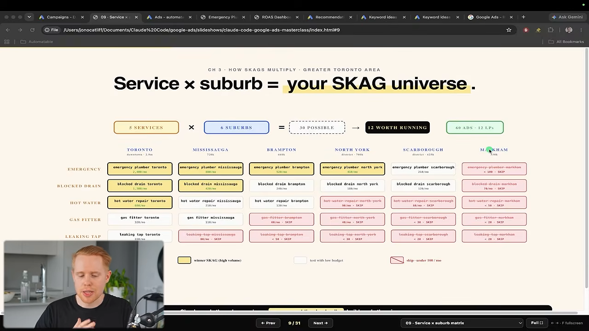
73만 달러 전략, SKAG
SKAG는 광고 그룹 하나에 검색어 하나만 넣는 구조예요. 핵심은 단순해요. 사람이 검색한 말이 광고에도, 광고를 누르고 들어간 페이지에도 똑같이 있어야 해요. 슬라이드의 세 열이 각각 'blocked drain toronto', 'hot water repair toronto', 'gas fitter toronto' 검색에서 시작해, 같은 문구의 광고와 같은 문구의 페이지로 이어져요.
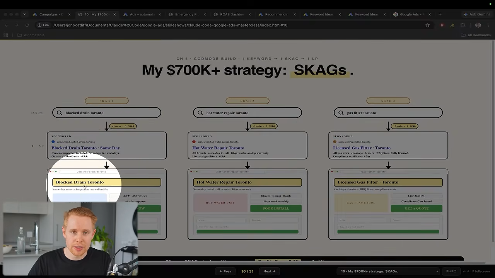
발표자는 실제 검색 결과로 반대 사례도 보여 줘요. "plumber services toronto"를 검색했는데 "Galvanized Pipe Replacement" 광고가 뜨면 바로 떠나요. "Waterline replacement" 페이지에 도착해도 마찬가지예요. 이 일관성은 결제 순간까지 이어져야 해요. 아래 슬라이드의 위쪽 줄은 검색, 광고, 페이지, 이메일, 영업 통화가 서로 다른 말을 해서 ROAS 0.8배로 새는 파이프예요. 아래쪽 줄은 다섯 칸 모두 'blocked drain toronto'라서 ROAS 5.8배가 나와요.
Claude Code를 Google Ads에 연결하기
여기부터는 예전에 손으로 하던 일을 Claude Code에 맡기기 위한 준비예요. 설정은 5분쯤 걸리고 한 번만 하면 돼요. 프로그래밍을 몰라도 된다고 발표자는 말해요. Claude Code를 "고용한 시니어 개발자"로, 나를 지시하는 사장으로 생각하면 된다고 해요.
작업 공간은 VS Code예요. 확장 탭에서 Claude를 검색해 Claude Code 확장을 깔고, "Google Ads"라는 빈 폴더를 열어요. 이 폴더에 프롬프트 모음과 설정 안내 문서 두 파일을 넣은 뒤, "설정 안내를 읽고 내 Google Ads 계정에 연결해 줘"라고 시켜요.
슬라이드는 전체 과정을 한 장에 담았어요. 왼쪽 네 칸이 단계이고 오른쪽 검은 상자가 결과물인 .env 파일이에요. 비밀번호와 키를 모아 두는 파일인데, 개발자 토큰, 클라이언트 ID(Identifier)와 시크릿, 리프레시 토큰, 로그인 고객 ID 다섯 값이 들어가요. 맨 아래 초록 줄은 연결 테스트 스크립트가 계정 목록을 출력하면 성공이라는 뜻이에요.
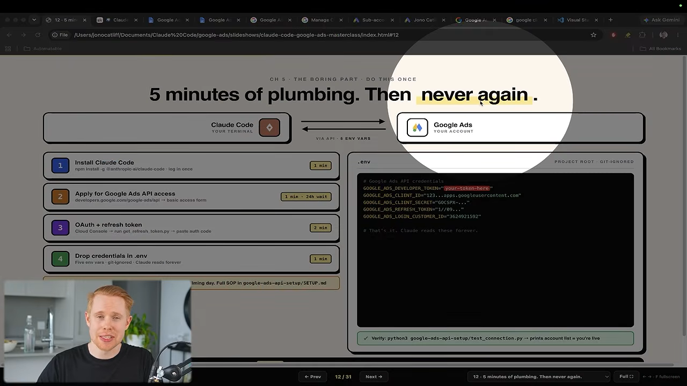
1. 관리자 계정과 개발자 토큰
일반 Google Ads 계정 말고 관리자 계정이 하나 더 필요해요. "Google Ads Manager account"로 검색해 가입하고, 계정 메뉴의 하위 계정에서 기존 광고 계정의 ID를 넣어 연결을 요청해요. 확인 메일을 승인하면 연결돼요.
그다음 관리자 계정의 관리 메뉴에서 API 센터로 가요. 화살표가 가리키는 칸이 개발자 토큰이고, 그 아래 Access level 칸에서 더 높은 단계를 신청할 수 있어요. 발표자는 이 토큰으로 하루 2,880건을 요청할 수 있고, 더 필요하면 기본 액세스를 신청하면 72시간쯤 뒤에 승인된다고 해요.
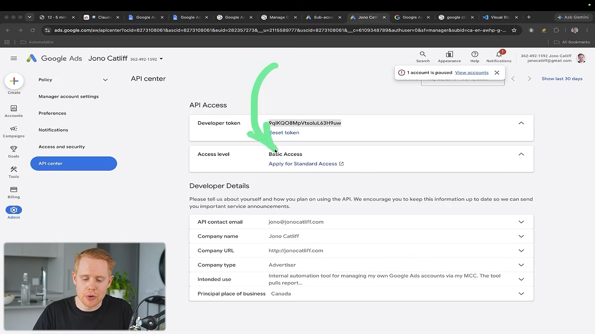
.env의 첫 줄에 붙여 넣어요. 설정 안내 문서가 이 과정을 단계별로 알려 줘요. 영상 14:49에서 보기2. Google Cloud에서 인증 만들기
Google Cloud Console에서 새 프로젝트를 만들고 결제 계정을 붙여요. 상단 검색창에 "Google Ads API"를 쳐서 API를 켜요. 이어서 API 및 서비스 메뉴의 OAuth 동의 화면에서 앱 이름과 지원 이메일을 넣고, 사용자 유형은 외부로 골라요.
중요한 단계가 테스트 사용자 추가예요. 아래 화면 오른쪽의 Add users 칸에 나중에 로그인할 이메일을 정확히 넣어야 해요. 앱이 아직 '테스트' 상태라서, 여기 등록한 사람만 로그인할 수 있어요.
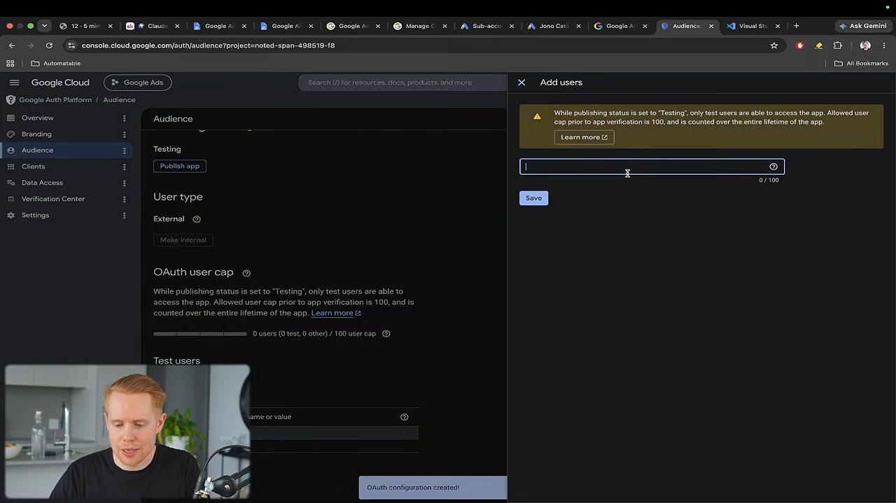
마지막으로 사용자 인증 정보 메뉴에서 OAuth 클라이언트 ID를 새로 만들어요. 애플리케이션 유형은 데스크톱 앱이에요. 만든 뒤 JSON(JavaScript Object Notation) 파일을 내려받아 프로젝트 폴더에 credentials.json이라는 이름으로 넣어요.
3. Claude에게 로그인을 맡겨요
"credentials.json을 넣었어. 읽고 구글 인증을 해 줘"라고 보내면 Claude가 브라우저 로그인 창을 띄워요. 테스트 사용자로 넣은 계정을 고르고 확인을 누르면 끝나요. 아래 화면에서 초록 화살표가 가리키는 부분이 Claude가 받아 온 리프레시 토큰을 .env에 써 넣은 기록이에요.
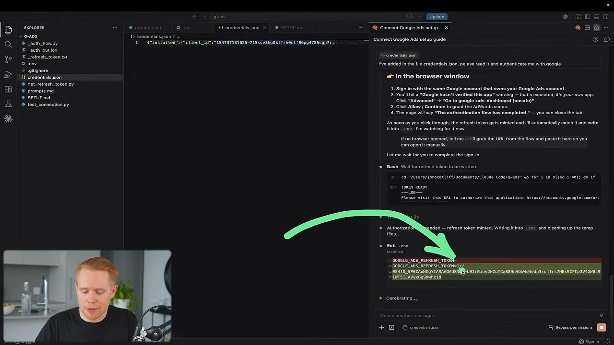
캠페인 구조, 기본 설정, 입찰
Google Ads 광고는 세 층으로 쌓여요. 맨 위가 캠페인, 그 안에 광고 그룹, 그 안에 광고예요. 발표자는 구글 드라이브의 폴더 안 폴더에 비유해요. 층마다 설정이 따로 있어요.
슬라이드의 빨간 상자가 캠페인 'Emergency Plumber'예요. 하루 5달러, 월~토 오전 7시~오후 9시, 토론토 반경 50km 같은 설정이 여기 붙어요. 그 아래 주황 상자 두 개가 광고 그룹이고, SKAG라서 각각 'emergency plumber toronto'와 'emergency plumber mississauga' 검색어 하나만 가져요. 맨 아래 초록 카드들은 같은 광고 그룹 안에서 서로 경쟁하는 광고이고, 카드마다 클릭률이 적혀 있어요.
광고를 여러 개 두는 이유는 스플릿 테스트예요. 광고 하나만 내면 운이 좋을 수도, 너무 나빠서 Google Ads를 접고 싶어질 수도 있어요. 수십, 수백 개를 시험해 다른 걸 압도하는 하나를 찾는 게 발표자의 방식이에요.
Claude가 만든 첫 캠페인
캠페인 설정 안내 문서를 campaigns.md로 넣고, 내 도메인을 적어 "첫 캠페인을 만들어 줘"라고 시켜요. 도메인을 주면 Claude가 회사를 조사해 그 내용을 캠페인에 반영해요. 데모에서는 'Plumber Toronto SKAG demo' 캠페인이 만들어졌어요.
첫 설정은 캠페인 유형이에요. 아래 화면에서 동그라미 친 게 '검색'이고, 옆으로 실적 최대화, 디맨드젠, 동영상, 아래로 디스플레이와 쇼핑이 있어요.
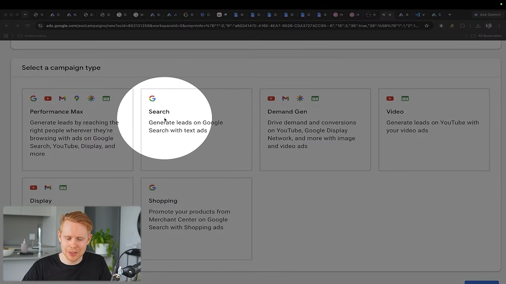
이유는 차고 세일 비유로 설명해요. 열 번 가면 한 번 평생 쓸 물건을 찾는데, 그게 검색 트래픽이에요. 나머지 "누가 이런 걸 사지?" 싶은 물건이 실적 최대화, 디스플레이, 디맨드젠, 동영상이에요. 지메일이나 유튜브, 다른 웹사이트에 붙은 광고는 실수로 누르고 바로 닫는 경우가 대부분이라는 거예요.
캠페인 설정 아홉 가지
슬라이드 왼쪽은 고객이 보는 검색 결과, 오른쪽은 그 광고를 만드는 설정 아홉 개예요. 빨간 글씨 두 줄이 특히 중요해요. 4번 지역은 '관심 말고 실제로 있는 사람만', 5번은 '내 나라 빼고 전부 제외해서 VPN·봇 클릭 차단'이에요.
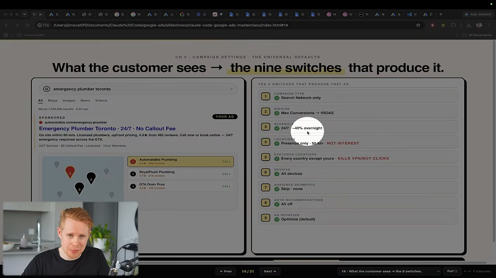
| # | 설정 | 값 | 발표자의 이유 |
|---|---|---|---|
| 1 | 캠페인 유형 | 검색 네트워크만 | 나머지 유형은 질 낮은 트래픽이에요 |
| 2 | 입찰 | 전환수 최대화 → 타깃 ROAS | 처음엔 리드를, 나중엔 매출을 기준으로 해요 |
| 3 | 일정 | 24시간 (밤 −40%) | 밤 광고는 싸지만 다음 날 연락이 잘 안 돼요 |
| 4 | 지역 | 실제로 있는 사람만, 50km | 기본값 '관심'은 해외에도 광고를 내요 |
| 5 | 제외 지역 | 내 나라 빼고 모든 나라 | VPN(Virtual Private Network)과 봇 클릭을 막아요 |
| 6 | 기기 | 모든 기기 | 태블릿, 모바일, 데스크톱 다 포함해요 |
| 7 | 잠재고객 세그먼트 | 쓰지 않음 | 검색한 사람이면 누구든 고객이 될 수 있어요 |
| 8 | 자동 추천 적용 | 모두 끔 | 구글이 광고주 비용으로 돈을 버는 장치예요 |
| 9 | 광고 순환 | 최적화 (기본값) | 그대로 둬요 |
지역 설정은 실제 화면으로 한 번 더 짚어요. 위치 칸에는 'Downtown Toronto 반경 50km'가 들어가 있어요. 위치 옵션을 펼치면 두 가지가 나와요. 화살표가 가리키는 위쪽은 구글이 '추천'을 붙여 둔 '관심 있는 사람 포함'이고, 아래쪽이 '실제로 있거나 자주 있는 사람'이에요. Claude는 아래쪽을 골라 뒀어요. 반경은 출장형 업체라면 도심에서 50km 정도로 잡아 근교까지 담고, 손님이 찾아오는 이발소 같은 곳이라면 더 좁혀요.
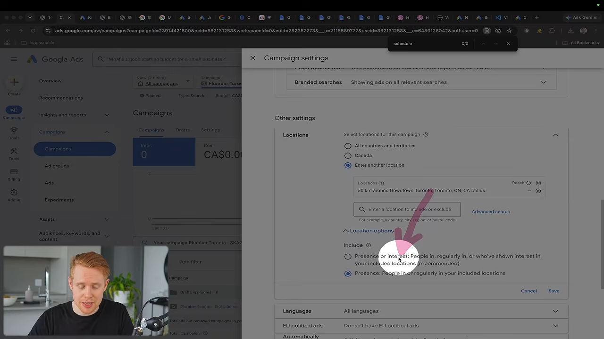
이렇게 한 번 리듬을 잡으면 처음에 뽑아 둔 키워드 목록을 Claude에게 주고 캠페인과 광고 그룹을 줄줄이 만들게 할 수 있어요. 손으로 하면 몇 주에서 몇 달 걸리던 일이에요.
입찰 전략: 클릭이 아니라 매출을 따라가요
광고는 클릭당 비용을 내는 경매예요. 더 많이 낸 광고가 대체로 위에 뜨고, 위에 뜰수록 비싸요. 처음엔 전환수 최대화로 시작해요. 클릭보다 폼을 채운 리드를 기준으로 삼는 거예요. 데이터가 쌓이면 실제로 돈을 낸 고객을 기준으로 바꿔요. 리드도 가짜이거나 질이 낮을 수 있기 때문이에요.
슬라이드는 이 순서를 단계로 보여 줘요. 왼쪽 위 1일차는 목표 없이 전환수 최대화를 켜고 하루 20~50달러로 두는 단계예요. 전환이 30건 쌓이면 4~8주차에 타깃 CPA(Cost Per Acquisition)를 넣어요. 맨 위 검은 띠에는 '30건 전에 목표 넣기', '목표를 20% 넘게 깎기', '14일 안에 건드리기' 같은 금지 사항이 있어요.
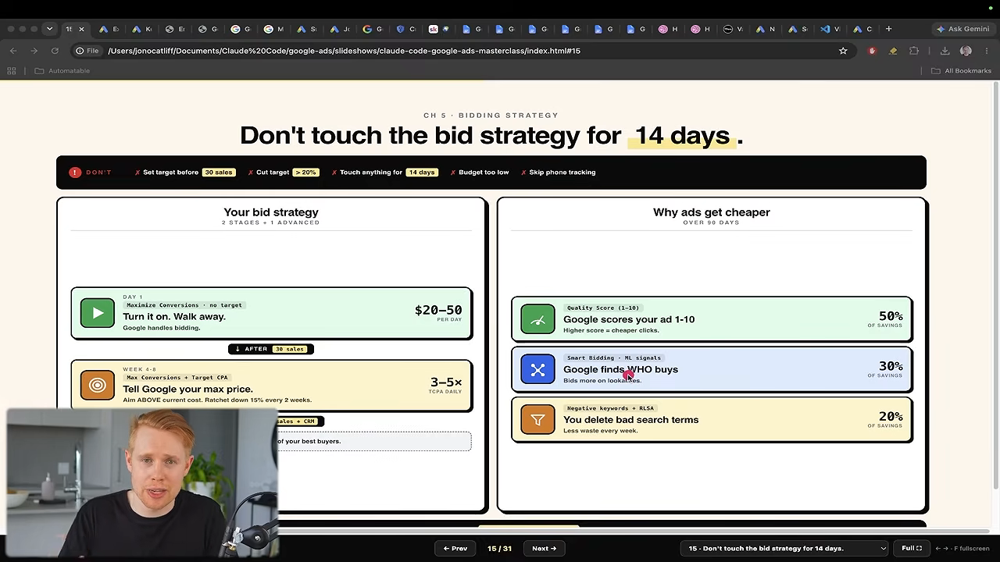
세 가지를 차례로 보면 이래요. 첫째, 스마트 입찰은 구글이 새 계정을 배우는 데 시간이 걸리니 기다려야 해요. 둘째, 엉뚱한 검색어에 광고를 띄우지 않아요. 광고 하나로 검색어 50개를 받으면 49번은 어긋나는데, SKAG는 이 문제를 구조로 막아요. 그래도 나쁜 검색어가 보이면 키워드에서 지우면 돼요. 셋째가 품질평가점수예요.
품질평가점수는 키워드마다 1~10점으로 매겨져요. 슬라이드 맨 위 검은 띠는 같은 자리에 광고를 낼 때 4점이면 클릭당 3.20달러, 8점이면 1.60달러라는 예시예요. 아래 카드 세 장이 점수를 이루는 요소예요. 예상 클릭률, 광고 관련성, 랜딩 페이지예요. 카드마다 '무엇이 점수를 죽이는가'도 적혀 있어요. 숫자 없는 일반 문구, 한 광고 그룹에 섞인 키워드 50개, 느린 일반 홈페이지 같은 것들이에요.
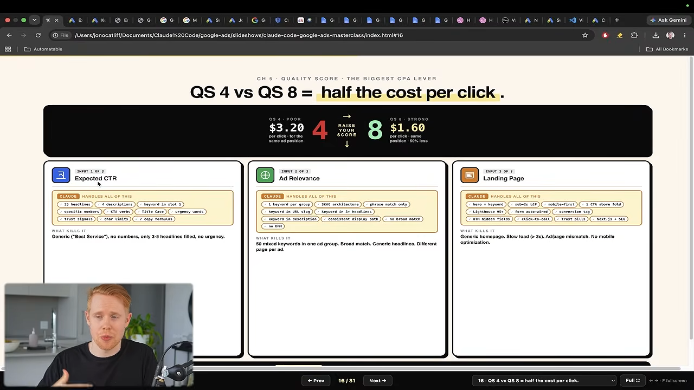
광고 200개, 고정 헤드라인, 제외 키워드
캠페인과 광고 그룹을 만들었으니 이제 광고 차례예요. 발표자가 Claude Code로 가장 좋아하는 작업이라고 해요. 예전엔 품질 좋은 광고 200개를 쓰는 데 집중해서 8~16시간이 걸렸어요. 이제는 몇 분이면 끝나서, 직원 스무 명짜리 대행사보다 빠르게 만들 수 있다고 해요.
슬라이드가 이 차이를 한 장으로 보여 줘요. 위쪽 검은 상자가 프롬프트 한 줄이고, 아래로 퍼지는 사다리꼴 끝에 광고 카드가 줄지어 있어요. 양옆 라벨은 '8분'과 '글자 수 초과 0건'이에요. 맨 아래 띠에는 같은 일을 대행사가 하면 14시간이라고 적혀 있어요.
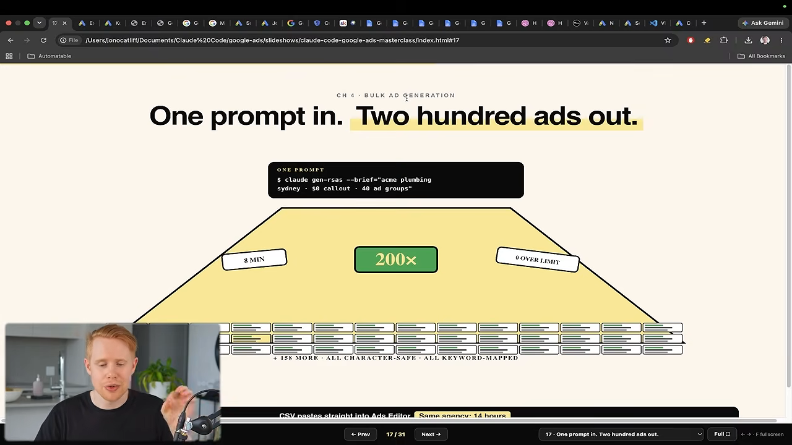
방법은 두 가지 참고 문서를 넣는 거예요. 하나는 좋은 Google 광고의 구성 요소, 다른 하나는 광고 애셋 모범 사례예요. 둘을 Markdown 파일로 넣고 프롬프트를 보내면 Claude가 광고를 만들어 Google Ads에 올려요. 데모는 짧게 하려고 광고 3개만 만들었어요.
Claude가 채운 광고 한 편
광고 하나를 열어 보면 최종 URL(Uniform Resource Locator), 표시 URL, 헤드라인 15개, 설명문이 모두 채워져 있어요. 최종 URL은 랜딩 페이지를 아직 안 만들어서 임시로 홈페이지를 넣었어요. 아래 화면은 같은 광고가 모바일 검색 결과에서 어떻게 보일지 미리 본 것이에요. 세 화면의 헤드라인이 'Toronto Plumber - 15 Years Serving', 'Licensed Plumber Toronto', 'Toronto Plumber - Upfront, Honest Pricing'으로 다 달라요. 구글이 헤드라인을 조합해 바꿔 보여 주기 때문이에요.
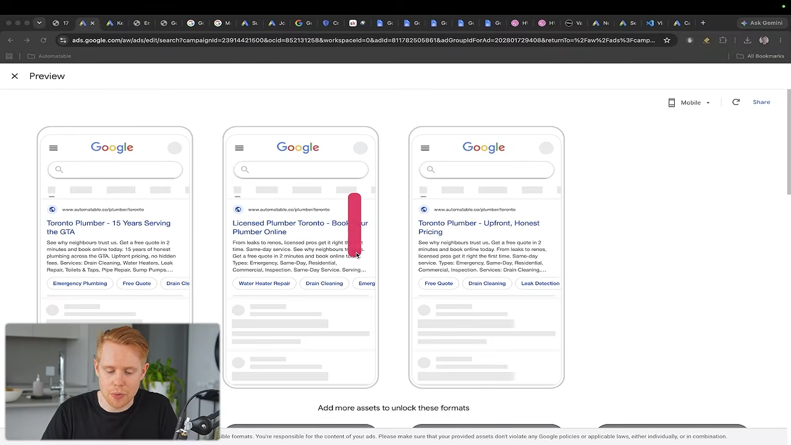
이미지는 일부러 넣지 않았어요. 좋은 사진은 클릭을 늘리지만, 흔한 스톡 사진이나 질 낮은 AI 이미지는 신뢰를 깎아요. 업체 이름과 로고는 Claude가 빠뜨렸는데, "다음엔 업체 이름도 넣어 줘"라고 말하면 고쳐요.
1번 자리에는 검색어를 고정해요
구글은 머신러닝으로 헤드라인 조합을 바꿔 가며 클릭률이 높은 걸 찾아요. 하지만 모든 자리를 마음대로 돌리게 두면 안 돼요. 슬라이드 왼쪽 목록에서 빨간 'PIN POS 1' 세 줄이 1번 자리에 고정한 헤드라인이에요. 'Emergency Plumber Toronto', 'Toronto Emergency Plumber', '24/7 Emergency Plumber'처럼 모두 검색어 자체예요. 나머지 'No Callout Fee Today', 'On Site Within 60 Min' 같은 혜택 문구는 고정하지 않아요. 오른쪽 세 광고가 그렇게 만들어진 변형이에요.
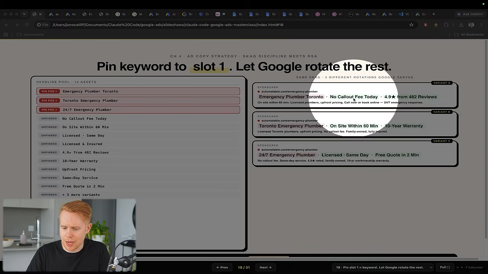
이유는 사람들이 광고를 건너뛰는 순간 때문이에요. 검색했는데 "선불 가격, 당일 서비스, 2분 견적"만 보이면 "이게 무슨 회사지?" 하고 지나쳐요. 먼저 검색어로 "내가 찾던 그거"라는 걸 보여 주고, 그 뒤에 혜택을 붙여야 해요. 발표자는 광고를 수백 개 시험하라고 권하면서도 조건을 붙여요. 한 달 조회가 100번뿐인데 테스트를 200개 돌리면 승자를 가릴 수 없어요. 검색량이 충분해야 해요.
확장 요소로 화면을 넓게 차지해요
Claude는 사이트링크, 콜아웃, 구조화된 스니펫도 채웠어요. 콜아웃은 '24시간 응급 서비스', '출장비 없음', '면허·보험 완비' 같은 짧은 장점이에요. 구조화된 스니펫은 제공하는 서비스 목록이고, 사이트링크는 사이트의 다른 페이지로 바로 가는 링크예요.
발표자가 보는 진짜 효과는 면적이에요. 슬라이드 왼쪽 광고 하나가 사이트링크 네 개와 콜아웃, 서비스 목록을 달고 검색 결과를 두 배쯤 차지해요. 오른쪽 다섯 줄은 업체 이름과 로고, 사이트링크, 콜아웃, 구조화된 스니펫, 이미지이고, 각각의 클릭률 상승 사례 수치가 붙어 있어요. 맨 아래 검은 칸은 네 가지를 모두 쓸 때 업계 평균 20~25% 클릭률 상승이라고 적었어요.

공통 제외 키워드 목록
랜딩 페이지로 넘어가기 전에 제외 키워드를 넣어요. 영상은 두 단계로 나눠요. 처음 하나는 어느 서비스업에나 통하는 공통 목록이고, 두 번째는 나중에 실제 검색어를 보고 지우는 작업이에요(대시보드 섹션에서 다뤄요).
슬라이드 왼쪽이 공통 목록의 7개 범주와 단어 수예요. 구직 37개, DIY·방법 28개, 학교·자격증 22개, 무료·할인 15개, 정보 검색 16개, 기존 고객 지원 18개, 제한 업종 14개로 모두 150개예요. 오른쪽 빨간 상자는 반대로 절대 넣으면 안 되는 단어예요. 'affordable', 'near me', 'quote', 'price', 'best', 'hire', 'emergency', 'local'은 쓰레기처럼 보여도 사려는 사람의 신호예요.
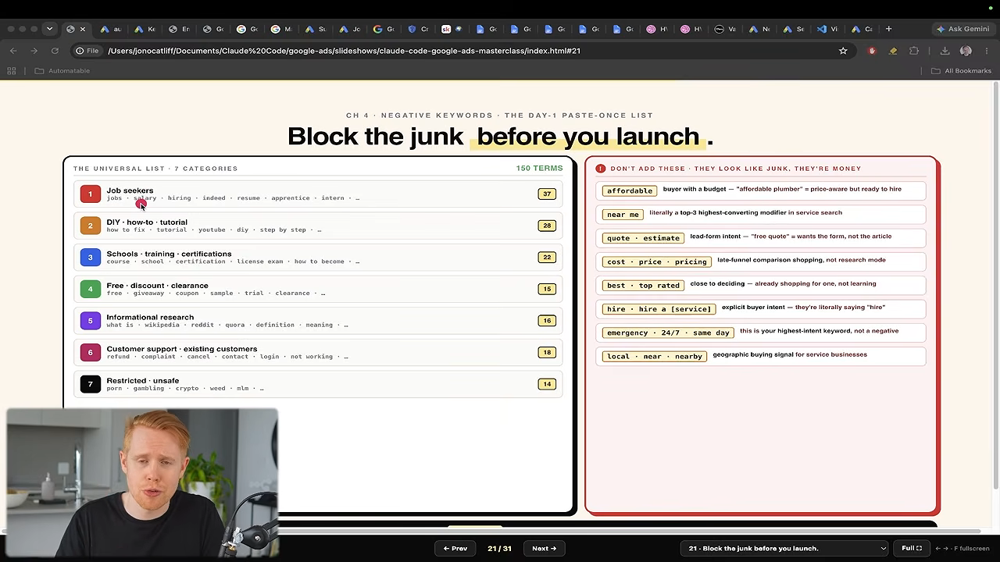
목록 파일을 넣고 프롬프트를 보내면 Claude가 이 단어들로 공유 목록을 만들어 캠페인에 붙여요. 아래 화면이 Google Ads의 공유 라이브러리에 생긴 목록이에요. coupon, course, crypto, definition, do-it-yourself 같은 단어가 들어 있어요. 공유 목록이라 다음 캠페인에도 그대로 붙일 수 있어요.
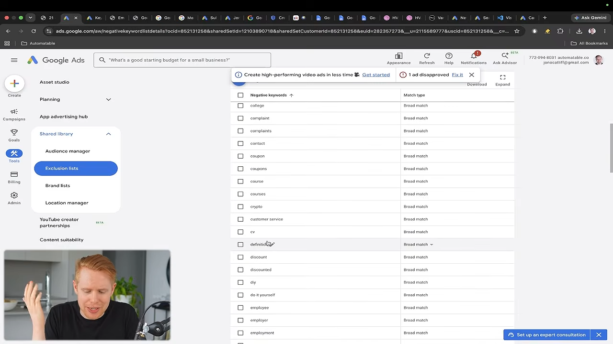
검색어에 맞춘 랜딩 페이지
광고를 만들었으니 광고마다 도착할 페이지가 필요해요. 발표자는 예전에 랜딩 페이지를 손으로 만들던 일을 "악몽"이라고 기억해요. 성과는 좋았지만 다시는 하고 싶지 않았대요. Claude로는 한 달 걸리던 일이 몇 분으로 줄어요.
원칙은 SKAG와 같아요. 슬라이드의 세 열이 'blocked drain sydney', 'hot water repair sydney', 'gas fitter sydney' 검색에서 시작해요. 가운데 줄이 그 검색어를 제목으로 단 광고, 아래 줄이 같은 제목의 페이지예요. 노란 제목 띠가 세 단계에 걸쳐 똑같아요.
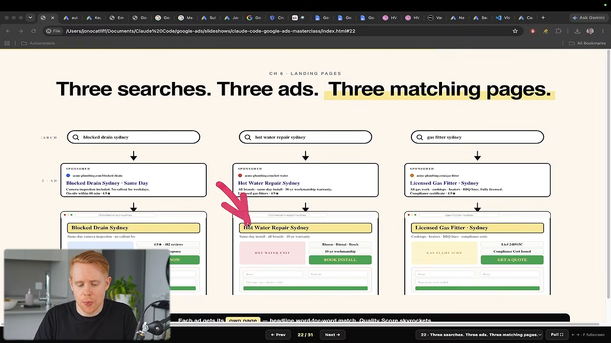
디자인 참고 이미지를 붙여서 만들어요
페이지는 Next.js로 만들어요. 발표자는 "직접 코딩한 사이트용 워드프레스"쯤으로 생각하면 된다고 해요. 프롬프트에는 헤드라인을 키워드와 똑같이 맞추라는 지시가 들어 있어요. 디자인은 Dribbble에서 'plumbing website'를 검색해 마음에 드는 시안 이미지를 받아 프롬프트에 붙여요. 그러면 Claude가 비슷한 느낌으로 만들어요.
결과 페이지가 아래 화면이에요. 큰 제목 'PLUMBER TORONTO — LICENSED, SAME-DAY SERVICE'가 광고 그룹의 검색어 'plumber toronto'로 시작해요. 아래쪽에는 별점 4.9, 15년 이상 같은 신뢰 숫자가 있어요. 발표자는 참고한 Dribbble 시안과 색감과 분위기가 놀랄 만큼 비슷하다고 말해요.
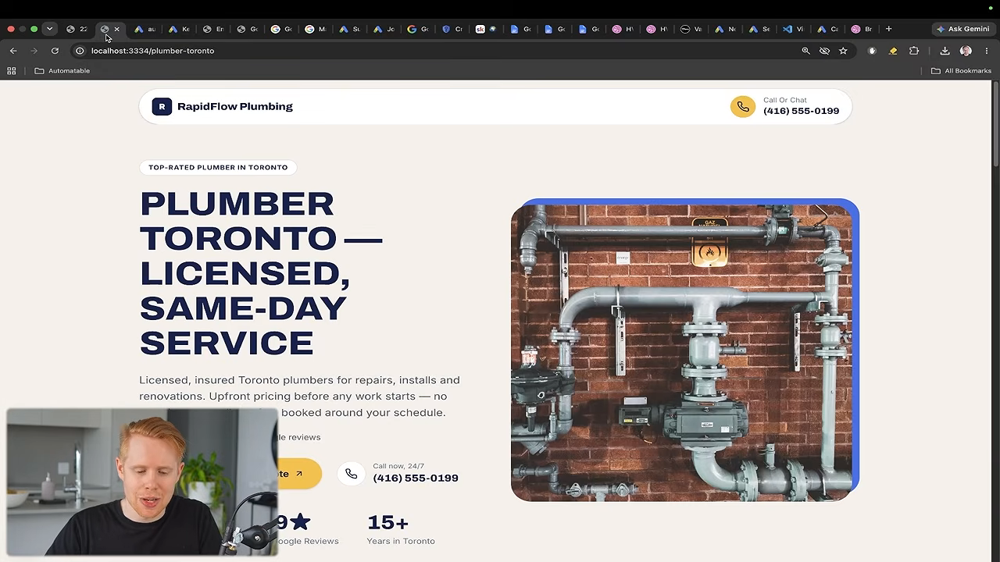
전환율 20%를 낸 페이지의 기본
발표자는 전환율 최적화를 따로 긴 강의로 다뤘다며, 여기서는 기본만 짚어요. 슬라이드는 페이지 요소를 등급표로 정리했어요. 맨 위 'SS' 등급은 스플릿 테스트 하나예요. 다른 모든 요소를 측정하고 쌓아 가게 해 주기 때문이에요. 그 아래 S 등급에 영상 후기, 페이지 위의 폼, 대표 소개 영상, 1분 안에 연락하기, 위험을 덜어 주는 제안이 있어요.
스플릿 테스트가 맨 위인 이유를 발표자는 이렇게 말해요. 나도, 술집에서 만난 친구도 각자 옳다고 생각하는 게 있지만 다 틀릴 수 있어요. 각자의 경험에서 나온 의견일 뿐이에요. 데이터를 추적하며 테스트해야 무엇이 통하는지 확실히 알 수 있어요.
그다음이 영상 후기예요. 사람들은 이 업체를 믿어도 되는지 알고 싶어 해요. 앞으로의 성과를 가장 잘 보여 주는 건 과거의 성과이고, 그걸 보여 주는 게 사회적 증거예요. 아래 화면은 발표자의 DJ(Disc Jockey) 사업 페이지로, 결혼식 고객의 영상 후기 아홉 편을 격자로 깔아 두었어요.
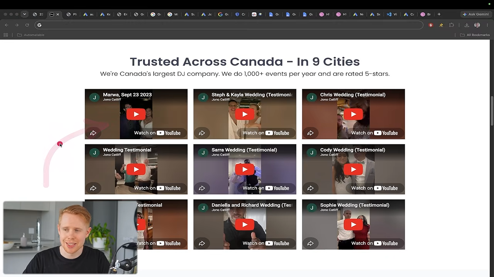
나머지 원칙은 짧아요. 문의 폼은 랜딩 페이지에 바로 있어야 해요. 다른 페이지로 숨기면 한 번 더 클릭할 때마다 전환율이 떨어져요. 대표 소개 영상도 둬요. 배관이 왜 필요한지 설득할 필요는 없어요. 길 건너 다른 업체 대신 왜 나를 골라야 하는지, 내가 믿을 만하고 친근한 사람이라는 걸 보여 주는 게 목적이에요.
가장 강조한 건 응답 속도예요. 폼이 들어오면 60초 안에 전화하는 걸 원칙으로 해요. 보통 업체는 48시간이 걸리는데, 광고비나 영업력을 늘리지 않고 이미 할 일을 빨리 하는 것만으로 판매가 네 배까지 늘 수 있다고 해요. 아래 폼 옆에도 '평균 응답 시간 75초, 전화를 준비해 두세요'라고 적어 두었어요.
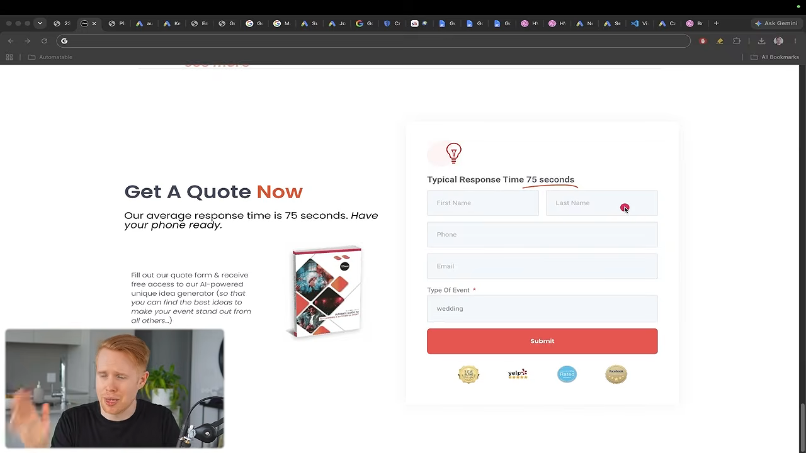
차가운 고객과 따뜻한 고객: 리마케팅
Google Ads에서 만나는 사람은 두 부류예요. 차가운 고객은 내 브랜드나 사이트를 본 적이 없어요. 관심도 없고 전환할 가능성도 낮아요. 따뜻한 고객은 한 번 와 봤고, 이 업체를 어렴풋이 기억해요. 노출이 쌓일수록 신용카드를 꺼낼 가능성이 커져요. 그래서 두 부류에 맞춘 캠페인을 따로 둬요.
슬라이드는 이를 두 개의 통으로 나눠요. 왼쪽 'COLD' 통은 지금 문제를 겪으며 구글에 검색하는 사람이고, 맞는 광고 지면은 지금까지 만든 SKAG 검색 광고 하나예요. 예산의 약 90%가 여기 들어가요. 오른쪽 'WARM' 통은 사이트에 한 번 왔지만 전환하지 않은 사람이에요. 검색 광고 입찰을 올리는 RLSA(Remarketing Lists for Search Ads)와, 방문자에게만 보이는 디스플레이 두 가지가 붙고 예산은 약 10%예요.
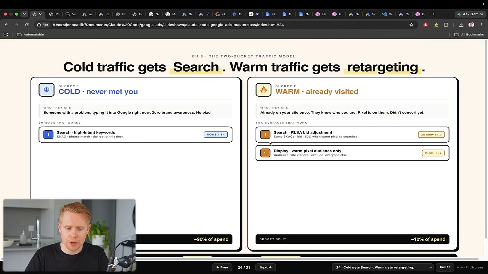
Google 태그 심고 확인하기
따뜻한 고객을 모으려면 페이지에 Google 태그를 심어야 해요. 방문자가 들어오면 구글이 그 사람을 알아보고 목록에 담는 작은 코드예요. 기술적인 부분은 Claude가 해요. 리마케팅 설정 안내 문서를 넣고, 프롬프트에 내 도메인(데모는 automatable.co)을 적어 보내면 태그를 넣고 잠재고객 목록까지 만들어요.
확인은 Google Tag Assistant로 해요. 도메인 칸에 localhost 주소를 넣고 연결하면, 페이지를 열어 둔 채 태그가 어떤 이벤트를 보내는지 기록해요. 데모에서는 폼 제출도 한 번 해 봐요. 아래 화면이 그 결과인데, Remarketing, User provided data, Lead Form Submit 같은 칸이 빼곡하게 찍혀 있어요.
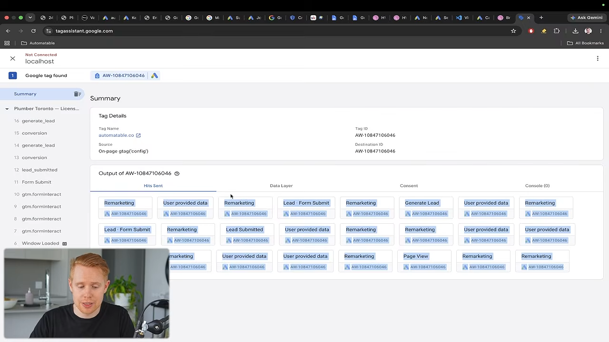
Claude에게 브라우저 테스트까지 맡기고 싶다면 Playwright 플러그인을 추가하라고 해요. Claude가 직접 브라우저를 열어 페이지를 확인해요.
어떤 리마케팅을 쓸까요
발표자가 확실히 권하는 건 RLSA예요. 검색 광고 그대로인데, 사이트에 와 본 사람이 다시 검색할 때 보여 주는 거예요. 클릭값은 더 들지만 전환율도 높아요. 디스플레이 배너는 따뜻한 고객에게만 시험 삼아 써 볼 만하고, 차가운 고객에게는 절대 쓰지 않는다고 해요. 효과가 있을 수도 없을 수도 있어서예요.
실적 최대화(PMax)는 끝까지 반대해요. 슬라이드 왼쪽 검은 상자는 예산이 들어가면 무엇을 샀는지 알 수 없는 PMax를 나타내요. 오른쪽 목록이 실제로 돈을 내는 대상이에요. 모바일 게임 속 실수 클릭, 아무도 안 여는 앱 배너, 데이터센터에서 오는 봇 트래픽, 건너뛰기 직전의 동영상 광고, 아무도 모르는 검색 파트너 사이트예요.
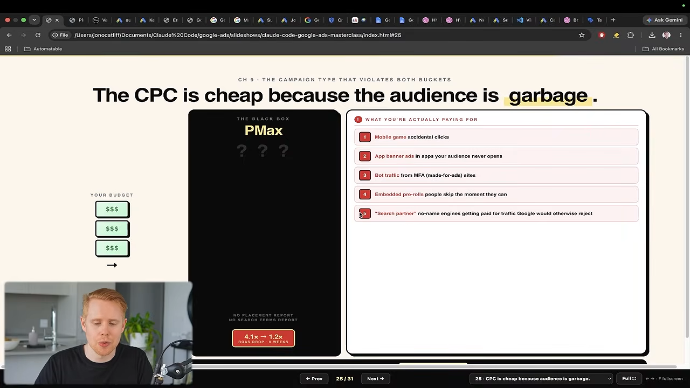
대시보드와 진짜 ROAS 추적
발표자는 이 부분이 영상 전체에서 가장 중요하다고 해요. 계정을 설정하는 것만으로는 돈을 벌 수 없어요. 돈은 최적화에서 나와요. 어떤 캠페인을 끊을지, 어떤 검색어를 막을지, 입찰을 어떻게 바꿀지 계속 판단해야 해요. 바쁜 사장은 이걸 할 시간이 없어서 대행사에 월 5천 달러를 내곤 해요. Claude Code는 이 일을 매우 빠르게 해요.
프롬프트 하나로 만든 대시보드
프롬프트 하나를 보내자 Claude가 대시보드 초안을 만들었어요. 아래 화면은 발표자의 DJ 사업(djing.ca) 계정의 최근 30일 데이터예요. 맨 위 카드 네 장은 ROAS 5.4배, 광고비 4,209달러, 광고로 이어진 매출 22,728달러, 리드당 비용 33.66달러예요. 왼쪽 표는 캠페인별 광고비, 매출, ROAS를 높은 순으로 칠해 두었어요. 오른쪽은 Claude가 할 일을 영향이 큰 순서로 추천한 목록이에요.
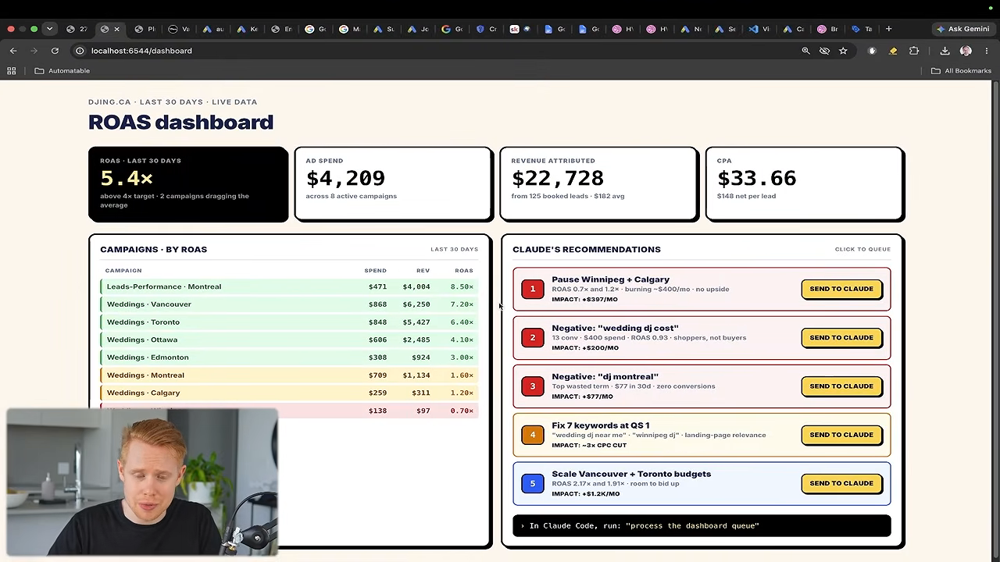
월요일 아침마다 이 화면을 보고 "이 세 가지를 고쳐 줘"라고 Claude에게 맡기면 돼요. 대시보드 없이 "내 계정을 감사해 줘"라고만 해도 비슷한 분석을 해 줘요. 발표자는 이를 월 20~100달러짜리 Google Ads 전문가를 둔 것과 같다고 표현해요. 지금은 뼈대만 만든 상태이고, 제대로 된 운영 화면으로 다듬으려면 몇 시간 더 걸린다고 해요.
진짜 ROAS를 추적하는 흐름
대시보드의 매출 숫자는 저절로 생기지 않아요. 발표자는 사업마다 연결 방식이 달라서 단계별로 따라 하게 보여 주지는 않고, 구조만 설명해요. 각 단계는 Claude와 대화하며 만들면 된다고 해요. 흐름을 한 장으로 그리면 이래요.
flowchart LR A["광고 클릭
URL에 검색어·캠페인·GCLID"] --> B["랜딩 페이지 폼
숨은 필드가 값을 받음"] B --> C["CRM에 리드 저장
출처·키워드 함께"] C --> D["고객이 결제
워크플로가 실행"] D --> E["대시보드
캠페인별 실제 ROAS"] D --> F["CSV로 Google Ads에 업로드
구글이 진짜 매출을 학습"]
출발점은 URL 매개변수예요. 광고를 누르면 주소 끝의 물음표 뒤에 정보가 붙어 와요. 아래 화면에서 노란 칸이 검색어 'wedding+dj+toronto'와 캠페인 'weddings-toronto'이고, 그 뒤로 클릭 ID인 gclid, 출처 google, 매체 cpc가 이어져요. 매체가 cpc라는 건 SEO나 SNS가 아니라 클릭당 비용을 낸 광고에서 왔다는 뜻이에요.
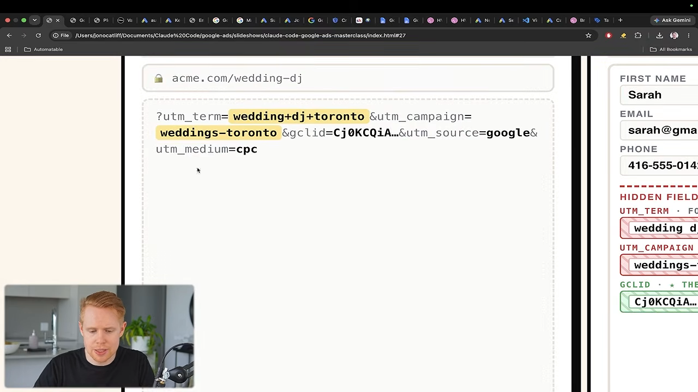
폼에는 방문자에게 보이지 않는 숨은 필드를 둬요. 화면 가운데 패널을 보면, Sarah가 이름, 이메일, 전화번호만 적었는데 아래 빨간 칸에 검색어와 캠페인이, 초록 칸에 GCLID(Google Click Identifier)가 저절로 채워져 있어요. 오른쪽 CRM(Customer Relationship Management) 카드에는 Sarah의 연락처와 함께 출처 Google Ads, 키워드, 캠페인, GCLID가 저장돼요.
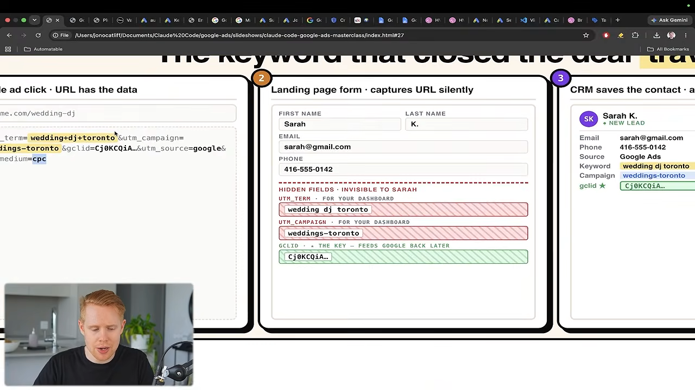
Sarah가 청구서를 결제하면 워크플로가 돌아요. Sarah 한 명이 아니라 결제한 고객 125명쯤의 기록이 모여 대시보드를 갱신해요. 이렇게 하면 클릭률이나 전환율이 아니라 Google Ads로 번 돈을 한 푼 단위까지 볼 수 있어요.
결제 데이터를 구글에도 알려요
대시보드는 내 보고용이에요. 구글은 그걸 볼 수 없어요. 슬라이드 왼쪽이 지금 구글이 보는 모습이에요. Sarah, Marcus, Priya, Tom 모두 '리드 = 200달러'로 똑같아요. 오른쪽은 결제 데이터를 올린 뒤예요. Sarah는 2,400달러, Marcus는 400달러, Priya는 200달러를 냈고, Tom은 취소해서 0달러예요.
슬라이드 위쪽 띠는 올릴 CSV(Comma-Separated Values)에 필요한 다섯 열이에요. gclid, 전환 이름, 전환 시각, 전환 금액, 통화예요. 업로드 방법도 세 가지를 적어 뒀어요. 매주 CSV 올리기가 가장 쉽고, Zapier로 결제 시스템과 잇거나 API로 실시간 전송할 수도 있어요. 발표자는 CSV로 내보내 올리면 끝이라고 해요.
낭비 검색어를 Claude가 걸러요
SKAG와 공통 제외 목록을 써도, 생각지 못한 검색어에 광고가 뜨는 일은 계속 생겨요. 이걸 정기적으로 찾아 제외 키워드로 넣어야 해요. 이 일도 Claude에게 맡겨요. 슬라이드는 30일 동안 낭비된 돈을 검색어별 막대로 보여 줘요. 'plumber salary'에 842달러, 'plumbing apprenticeship'에 671달러, 'diy blocked drain'에 508달러가 새고 있어요. 오른쪽 아래 초록 띠는 이걸 막아 한 달에 2,861달러를 되찾는다는 뜻이에요.

제외 키워드 찾기 안내 문서를 넣고 프롬프트를 보내면, Claude가 계정을 깊이 분석해 보고서를 줘요. 실제 계정에서 Claude는 'DJ hiring'을 찾아냈어요. 발표자는 DJ를 고용하려는 사람의 검색이라고 생각했는데, Claude가 구글에서 직접 찾아보니 Indeed나 LinkedIn 같은 구인 사이트로 가는 검색이었어요. 'Wedding DJ Vancouver'도 걸렸어요. 토론토와 밴쿠버는 나라 반대편이라 받을 수 없는 고객인데 돈은 나가고 있었어요.
보고서를 승인하면 Claude가 그 검색어들을 제외 키워드로 등록해요. 발표자는 몇 년 동안 운영하면서도 직접은 못 봤을 것들을 몇 초 만에 찾았다며, 전환당 비용을 낮추는 가장 과소평가된 방법이라고 말해요.
사이트 배포와 스킬로 반복 줄이기
지금까지 만든 랜딩 페이지는 내 컴퓨터에서만 열려요. 광고를 누른 사람이 볼 수 있게 인터넷에 올려야 해요. 슬라이드는 이 과정을 세 칸으로 보여 줘요. Claude Code가 사이트를 만들고, GitHub가 코드를 보관하고, Vercel이 그 코드를 받아 세상에 띄워요. 발표자는 GitHub를 "코드용 구글 드라이브"라고 설명해요. 둘 다 무료예요.
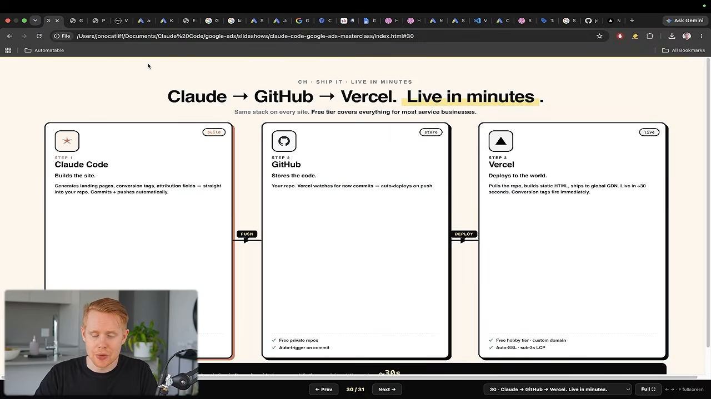
- GitHub에서 새 저장소를 만들어요 — 이름은 아무거나, 공개 범위는 반드시 비공개로 해요. 저장소 주소가 담긴 안내 코드가 화면에 떠요
- 그 주소를 복사해 Claude Code에 붙여 넣어요 — "landing-pages 폴더를 여기에 올려 줘"처럼 폴더를 지정해요. 설정 문서 같은 다른 파일은 빼고 페이지와 대시보드만 올리기 위해서예요.
- Vercel에 가입하고 새 프로젝트를 만들어요 — GitHub와 연결한 뒤 방금 만든 저장소를 가져와요.
- 프리셋이 Next.js인지 확인하고 배포를 눌러요 누구나 열 수 있는 주소가 생겨요
아래가 배포된 페이지예요. 주소창이 localhost에서 vercel.app 주소로 바뀌었어요. 발표자는 이 주소가 "끔찍하다"며, Vercel에서 도메인을 사거나 GoDaddy, Namecheap 같은 곳에서 산 도메인을 연결하면 된다고 해요.
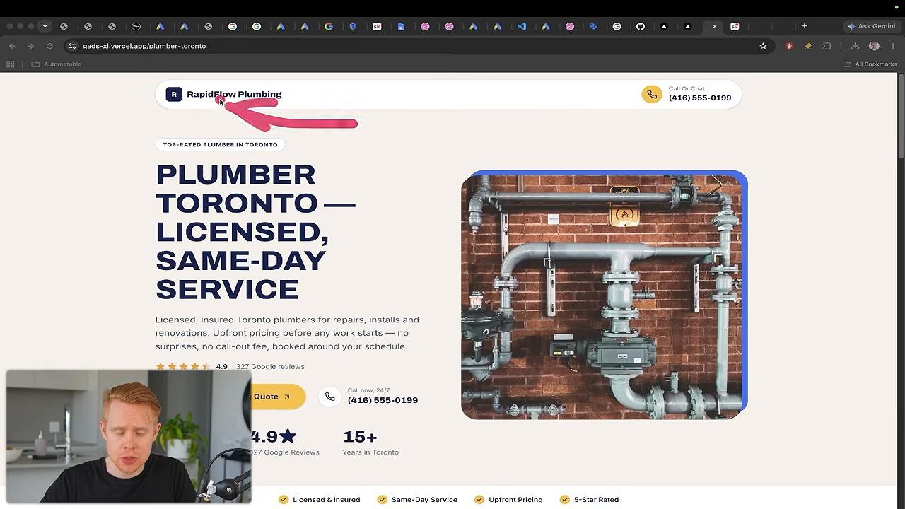
스킬로 다음 작업을 열 배 빠르게
지금까지는 단계마다 문서를 넣고 프롬프트를 고르느라 꽤 느렸어요. 이걸 스킬로 묶으면 빨라져요. 스킬은 필요할 때 불러 쓰는 작업 순서예요. 프롬프트 모음에 있는 스킬 생성 프롬프트를 보내면 Claude가 스킬 파일을 프로젝트 폴더 안에 만들어요.
사용법은 새 대화를 열고 슬래시와 스킬 이름을 치는 거예요. 데모에서는 /generate-ads를 부르고 "토론토 배관 광고 그룹에 광고 5개 더 만들어 줘"라고만 덧붙였어요. 좋은 광고의 조건이나 이 사업의 맥락을 다시 설명하지 않아도 같은 기준으로 만들어요.
슬라이드는 이 영상의 전체 흐름을 스킬 여섯 개로 정리해요. 1 /build-campaign은 기본 설정과 지역, 입찰 전략을 갖춘 검색 캠페인을 만들어요. 2 /build-skags는 서비스 × 도시 매트릭스로 광고 그룹을 한꺼번에 만들어요. 3 /generate-ads는 SKAG마다 헤드라인 15개와 설명 4개를 쓰고 1번 자리에 키워드를 고정해요. 4 /build-landing-page는 키워드와 같은 제목의 페이지를, 5 /audit-account는 계정 감사와 대시보드를, 6 /clean-negatives는 낭비 검색어 정리를 맡아요.
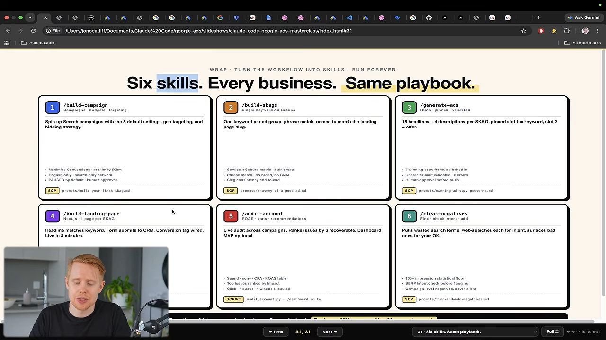
3번과 6번 카드에는 '사람이 승인한 뒤에 반영'이라는 줄도 있어요. 광고를 올리거나 키워드를 막는 일은 Claude가 준비하고, 마지막 확인은 사람이 하는 구조예요.